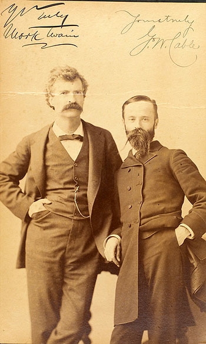

One of the lessons MT learned at the start of his career was that a lecture tour was a good way to advertise and promote a new book. Although he hadn't toured since the early 1870s, by the summer of 1884 he had hired Major J.B. Pond as the agent, and contracted with George Washington Cable, author of The Grandissimes and other fiction about New Orleans, to accompany him as a performer. Between 5 November 1884 and 28 February 1885 the two writers took the stage for over 103 performances in about 80 cities. |
|
 |
For the first several weeks MT's share of the program usually included a brief excerpt from Huck Finn -- typically, Jim and Huck's colloquys about investing in stock and "King Sollermun" -- and also a number of old favorites from his repertoire of platform pieces, including "The Jumping Frog," "The Stammering Story," and, usually as an encore, "The Golden Arm." Dissatisfaction with the program, however, led MT to redesign it over the break the tour took at Christmas; it was then that he decided to make the last section of his forthcoming novel, the "Evasion" in which Tom and Huck set out to free Jim, the major feature of the evening's performance. When the second leg of the tour opened in Pittsburgh on December 29, he premiered the piece. In a letter to his wife, he said that "it went a-booming" -- "it's the biggest card I've got in my whole repertoire." Beginning in the 1920s, many people became troubled with the novel's Evasion section (Hemingway said, for example, that readers should skip it), but the thousands of contemporaries who heard MT perform the episode on this tour seem to have loved it. MT's letters suggest that he too was mainly delighted with the new bill. One night in Canada, however, as he and Cable were making their way back to the hotel after the show, MT turned to his companion and said: "I am demeaning myself. I am allowing myself to be a mere buffoon. It's ghastly. I can't endure it any longer." |
|